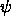
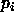
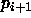

Two new update functions have been implemented for partial recurrent networks:

to predict the next value
, the input pattern can not be generated before the needed prediction value
can not be generated before the needed prediction value

is available. For long-term predictions many input patterns have to be generated in this manner. To generate these patterns manually means a lot of effort.Using the update function JE_Special these input patterns will be generated dynamically. Let n be the number of input units and m the number of output units of the network. JE_Special generates the new input vector with the output of the last n-m input units and the outputs of the m output units. The usage of this update function requires n > m. The propagation of the new generated pattern is done like using JE_Update. The number of the actual pattern in the control panel has no meaning for the input pattern when using JE_Special.